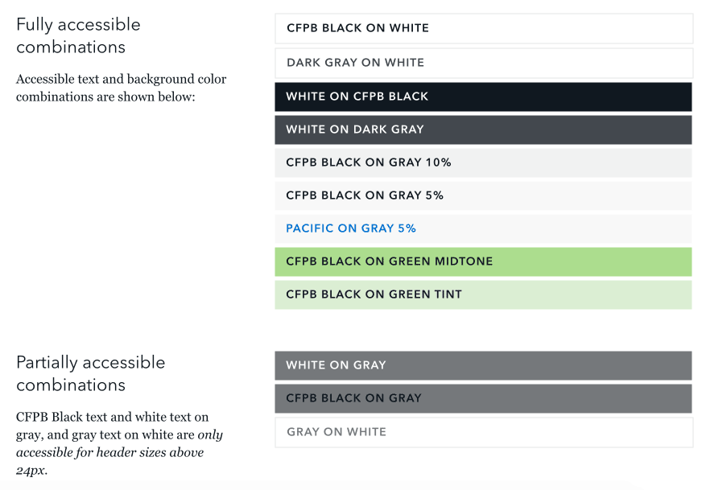
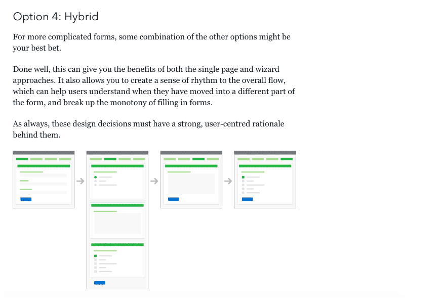

CFPB Design Manual
Developing a consistent identity and brand resources for the CFPB
The Design Manual is an open-source resource built to help employees and contractors produce effective and visually-consistent print and digital products on behalf of the Bureau. The Manual includes our design principles, guidelines for user experience, identity standards, and code snippets for common user interface elements. The Manual will continue to evolve as we learn what works best for the CFPB and the people we serve.
The CFPB brand helps to cultivate a trusted relationship with consumers and enable them to live better financial lives. These guidelines represent the most up-to-date visual expression of the CFPB brand, also known as identity.
When used as the building blocks for visual communication, we can be confident the final output will be consistent and recognizable as a CFPB production.
Identity Components & UI Guidelines
These are the strategic underpinnings for the CFPB’s design and development standards. They serve as the backbone for the user experience, ensuring that the standards we set enable products that are easy to use and understand for consumers.

Accessibility Standards
As a federal entity, we strive to comly with Section 508 guidelines for web accessibility. These standards ensure that content is accessible by everyone, regardless of any disability or user device.

UX Guidelines
We provide guidelines for common user interface features like web forms, which should be designed with potential users in mind. Typically we outline several ways to ensure the best possible user experience.
Icon Libraries
Building a visual language for communicating about financial products, processes, and information.
Our icons are used to quickly convey complicated financial topics to consumers from a broad range of backgrounds, helping us overcome language and cultural communication barriers. Consistent iconography helps visually reinforce interface actions, communicate file types and status indicators, and improve readability for key topics throughout our web applications and print materials.

Internal Iconathon
This past January, we hosted our inaugural iconathon, a half-day workshop to brainstorm and sketch new icon ideas.
Subject matter experts from throughout the Bureau overcame their fears of sketching and joined our user experience and graphic designers to generate ideas for nearly forty financial concepts.
Read the full article "Collaborating on Civic Symbols" on CFPB Open Tech.
They were tasked with representing challenging topics like “payday lending,” “getting out of debt,” and even the seemingly insurmountable “resources for intermediaries.”
By the end of a morning packed with sharpies and post-its, teams had sketched nearly 400 different ideas. We held a critique to discuss which approaches provided the best conceptual representation rather than visual polish. Favorite sketches included solutions for “credit card fraud,” “digital currency,” and “building credit.” The leading approaches were recorded for our design team to execute as final icons for our library.